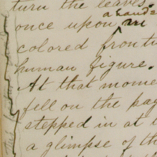
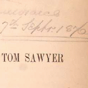
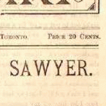
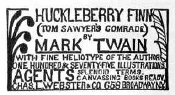

|
Mark Twain wrote his story about Tom at three different times: the winter of 1872-73; the spring and summer, 1874; the spring and summer, 1875. He may have set out initially either to burlesque conventional children's books, or to trace Tom's progress all the way into adulthood. Vestiges of his parodic intention remain, but as he wrote it the book became an idyll of childhood -- or as MT called it, a "hymn" -- set during one glorious if implausible summer of adventure. Even after he'd finished it, MT felt strongly that Tom Sawyer was "not a boy's book." It was William Dean Howells who convinced him "to treat it explicitly as a boy's story," and sell it on that basis. Howells read a copy of the manuscript in November, 1875. MT "thoroughly & painstakingly" revised his manuscript before sending it to Howells, but wanted his friend to check the text for lapses of taste and decorum. Howells was enthusiastic about the story, but in the margins did suggest a number of changes, some to improve its art and some to refine its manners. When he went through the manuscript one last time, MT accepted most of Howells' emendations, and changed one additional word Howells had apparently overlooked: having Huck say "thunder" instead of "hell." When the revised copy went to the typesetters in January, 1876, MT had great hopes for this "experiment." The first American edition of Tom Sawyer, however, did not appear until almost a year later. The delay cost MT over $10,000, according to his own reckoning, and contributed to the book's weak first-year sales. The reasons for the delay remain unclear. MT did not want an American edition published until the novel had first appeared in England, thus securing a British copyright. The English Tom Sawyer came out on 9 June 1876, but Elisha Bliss was unprepared to launch a sales campaign -- perhaps, as MT complained, because the American Publishing Co. was pushing too many other books, perhaps because Bliss was unenthusiastic about Tom. As a short work of fiction it was an anomalous subscription book. The Gilded Age (1873) was the first time a novel had ever been sold "by subscription only," and it hadn't done as well as MT's previous travel books. According to one book agent, a woman in California, it was embarrassing to offer subscribers a book as thin as Tom Sawyer. Despite angry proddings from MT, the selling of Tom Sawyer kept being put off. By the time the prospectus and agents were in the field, a pirated edition of the novel had been on the market for four months. Tom Sawyer always wanted to be a pirate, but MT was furious about being pirated. The unauthorized Tom Sawyer came from Canada , where the copyright situation was vague enough to encourage widespread reprintings of MT's works during the 1870s. An unillustrated Adventures of Tom Sawyer was published by the Belford Brothers on 29 July 1876.  MT suspected that the Belfords had stolen proof sheets of Tom Sawyer from Bliss' factory, but it is more likely that they set their edition from a hastily imported copy of the British one. Their version of the novel was available in three prices: $.75, $1.00 or $2.25 -- considerably less than the authorized one would cost. And there was no way to keep pirated copies of the book from coming into America along steamboat and train lines. Howells, for example, saw a Canadian Tom Sawyer for sale in the Albany train station. The copy in the Barrett Collection graphically indicates what MT was up against on its titlepage, where someone (the name has been effaced) recorded where and when the book was bought: on the steamer St. Lawrence, perhaps on its way into America, and in September, 1876 -- fully three months before Bliss was ready to sell any copies on which MT could make money.  The Belfords' illegal Tom was so popular that third printing was needed by October, 1876. And when, in 1879, the firm -- now known as the Rose-Belford Publishing Co. -- decided to introduce a line of novels in a new newspaper format that could be sold for ten or twenty cents and sent through the mails at reduced rates, the first text they printed was Tom Sawyer, illustrated with woodcuts that seem to be imitated from True Williams' pictures. American readers could order and receive Tom in this inexpensive format through the mails. MT raged against the Belfords, too, and later tried various strategies for securing Canadian rights that would foil their piracies. But mainly he blamed Bliss for the delay that meant that by the time the first American edition of his first novel appeared, it was for many people an old story. Neither how many Canadian copies were sold in the States nor exactly how much money MT lost to the pirates is known. But the fate of Tom Sawyer not only soured him on the American Publishing Co; it also seems to have discouraged him as a writer. During the next five years he published only one book. MT's royalties from Tom Sawyer picked up considerably after 1885, when Adventures of Huckleberry Finn appeared with the subtitle Tom Sawyer's Comrade. Tom's name was conspicuous in the advertising for Huck's book, and the popularity of MT's second novel about the world he grew up in renewed the public's appetite for his first. |